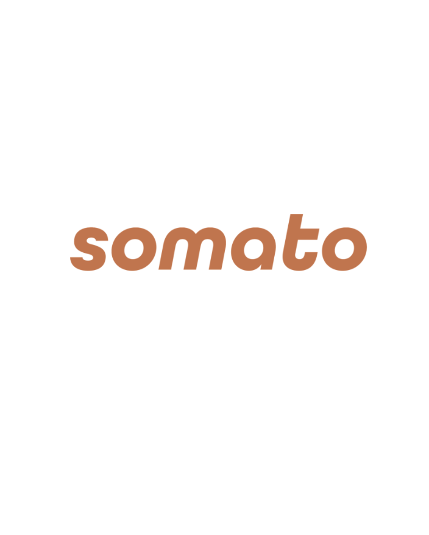
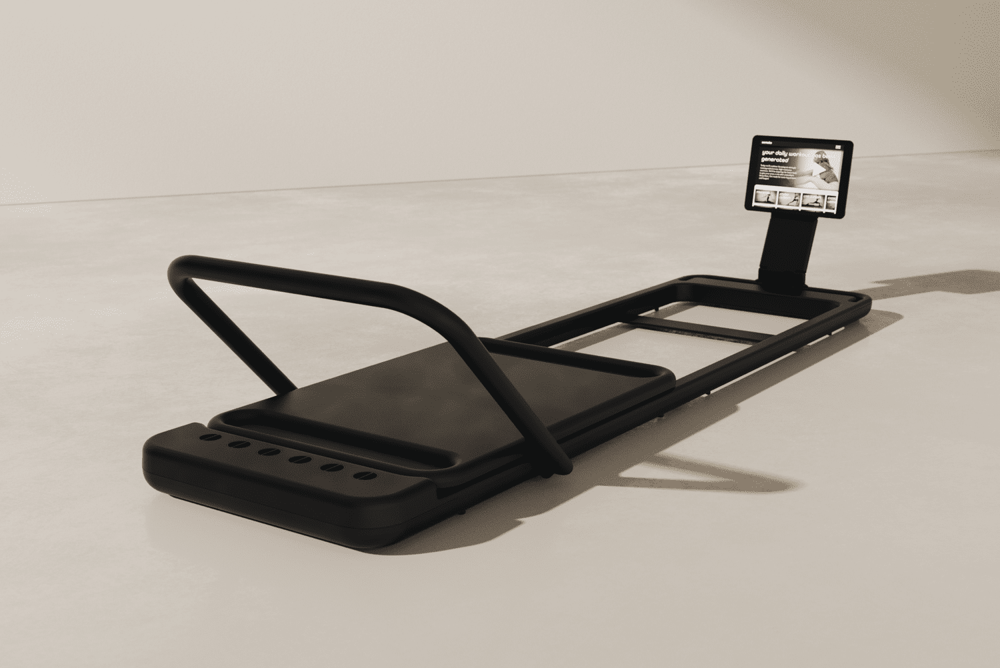
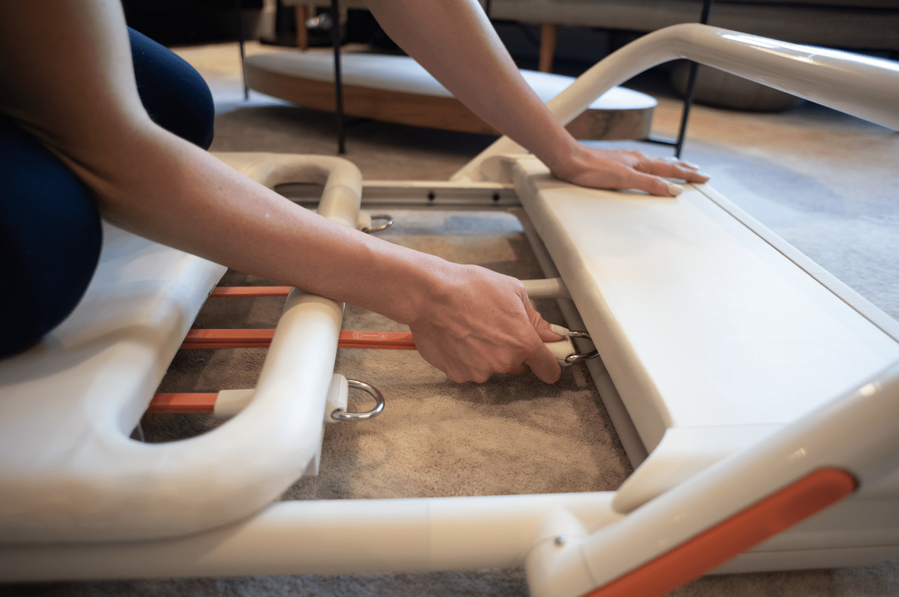
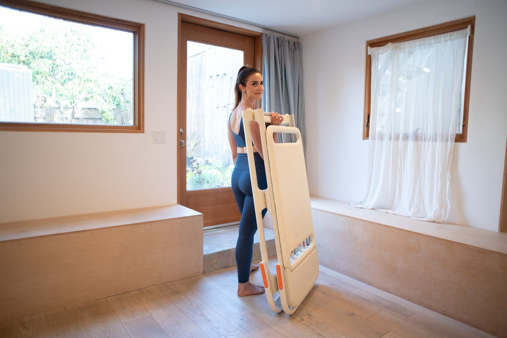
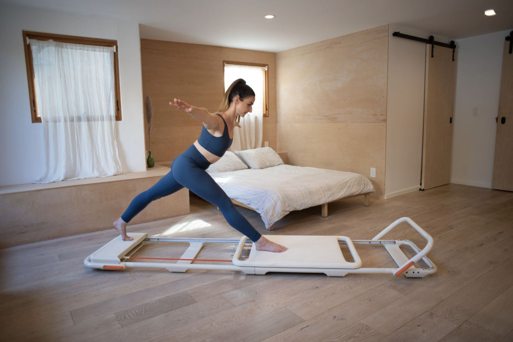

In the Summer of 2023, I worked as a Mechanical Engineering Intern with Somato. Somato is a startup that is working to redesign outpatient recovery with pilates reformer-inspired smart exercise equipment. The Somato has integrated pressure sensors and a digital coach that guides the user through exercises assigned by their physical therapist.
At Somato, I worked on optimizing the strength and size of injection molded, aluminum extruded, and steel parts while maintaining the aesthetic design. Working under CEO Hannah Fink, who has a background in industrial design, I learned to appreciate the importance of creating a tailored user experience while designing.
Design-for-manufacturing (DFM) was the focus of this internship as I made improvements to the interior functionality of the product including manufacturability, strength, and weight of the product.
After the design was complete, I utilized GD&T to create technical drawings for each individual part and assembly of the Somato for our manufacturers and will be going in person to oversee and test the first fully manufactured product.
All images courtesy of Somato.




